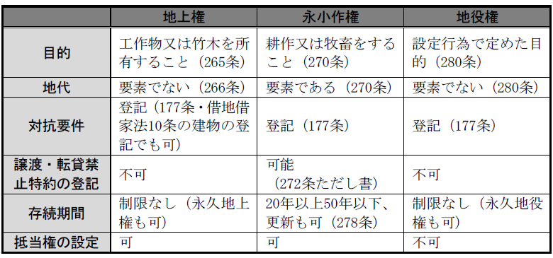

第２編 物権
第４章 用益物権
用益物権：他人の土地を一定の範囲で使用収益をすることができる物権の総称
【各種用益物権の比較】

第１節 地上権
：他人の土地において工作物又は竹木を所有するため、その土地を使用する権利
1. 他人の土地を客体とする物権である。
土地は１筆でなく、その一部であってもよい。ただし、１筆の土地の一部を目的として、地上権設定登記をすることはできない。
2. 工作物又は竹木を所有することを目的とする権利である。
工作物には建物のほか、トンネル・池・地下鉄道などの建造物を含む。
竹木とは主として植林の目的となる植物をいい、耕作を目的とする場合は不可（永小作権の対象となる）。
3. 他人の土地を使用する権利である。
工作物又は竹木の存在しない土地に地上権を設定することもできる。
4. 相続性・譲渡性を有する。
1. 設定
① 契約によるほか、遺言や取得時効によっても取得され得る。
② 法定地上権（388条）
2. 地上権の存続期間
(1) 設定行為で期間を定める場合
長期につき特別の制限は設けていない。判例は永久の地上権を肯定している（大判大14.４.14）。
最短期について民法は制限を設けていないから、どんな短期でもよい。ただし、建物所有目的の地上権の存続期間は借地借家法によって最短期間が30年に法定されている（借地借家法３条）。
(2) 設定行為で期間を定めない場合（法定地上権も含む）
慣習があればそれに従う（268条１項本文）。
慣習がなければ当事者の請求により裁判所が定める。裁判所は工作物又は竹木の種類･状況その他地上権設定当時の事情を考慮して20年から50年の範囲で、存続期間を定めることができる（268条２項）。
慣習のないときは、地上権者はいつでも権利を放棄できるが、地代を支払うときは、１年前に予告するか、１年分の地代を払わなければならない（268条１項ただし書）。
(3) 借地借家法による修正
建物の所有を目的とする地上権には借地借家法の適用がある（借地借家法１条）。
1. 地上権者の土地使用権
設定行為によって定められた目的の範囲内で、他人の土地を使用する権利を有する。土地所有者は土地の使用を妨げてはならないという消極的義務は負うが、特約ない限り、土地を使用するに適する状態を作出すべき積極的な義務は負わない。この点、賃貸人と異なる。なお、明文はないが土地に対して、回復することのできない損害を生ずべき変更を加えることはできないと解されている（271条類推）。
相隣関係の規定の準用がある（267条）。
2. 物権的請求権
侵害の態様に応じて、地上権に基づく返還請求権、妨害排除請求権、妨害予防請求権が生ずる。
3. 地上権の処分の自由
設定者の承諾なくしてその地上権を他人に譲渡し、また担保に供し、さらに土地を他人に賃貸することができる。譲渡禁止特約は債権的効力（当事者間においてのみ有する効力）にすぎず、第三者に対抗できない。
4. 地上権の対抗力
対抗要件は登記である（177条）。土地所有者は、登記に協力する義務がある。
建物所有を目的とする地上権については、建物の登記が対抗要件となる（借地借家法10条１項）。判例によれば、この建物の登記は表示の登記でもよい（最判昭50.２.13）。
5. 地代支払義務
地代は地上権の要素ではなく、当事者間に約定ある場合のみ、その支払義務が発生する。
6. 賃借権との主な差異
① 賃借権は債権である。
② 地主は賃借人に対して当然には登記義務を負担しない。
③ 賃借権の存続期間は50年を超えることができない（604条）が、地上権は制限がない。
④ 賃借権の譲渡・転貸には賃貸人の承諾を要する（612条）。
1. 消滅原因
(1) 地上権の放棄（268条１項・前述）
不可効力により、引き続き３年以上全く収益を得ず、又は５年以上地代より少ない収益を得たときは、268条１項ただし書の予告や地代支払なしに、地上権を放棄できる（266条、275条）。
(2) 土地所有者の消滅請求
地上権者が引続き２年以上の地代支払を怠ったとき消滅請求できる（266条、276条）。
土地に対して、回復することのできない損害を生ずべき変更を加え、又は土地使用の約定に違反するときは541条、542条による。
2. 地上権消滅の効果（269条）
(1) 地上物の収去権
地上権者は、別段の慣習がある場合を除き、地上権が消滅した時に、土地を原状に復してその工作物及び竹木を収去することができる（269条１項本文）。
(2) 地上物買取権
ただし、土地所有者が時価相当額を提供してこれを買い取る旨を通知したときは、別段の慣習がある場合を除き、地上権者は正当な理由がなければ、これを拒むことができない（269条１項ただし書、２項）。
なお、借地借家法の適用がある地上権については、地上権者に建物買取請求権が認められる（借地借家法13条１項）。
1. 意義
：地下（ex. 地下鉄、トンネル、地下街）又は地上（ex. モノレール、高架鉄道）の範囲を区切って、工作物を所有するための地上権
今日登記されている地上権の大部分を占める。
なお、既に当該土地に地上権、永小作権、賃借権等の権利者がいる場合であっても、その権利者の承諾があれば区分地上権を設定できる（269条の２第２項）。
2. 区分地上権設定による制限
設定行為によって、区分地上権行使のためにその土地の使用に制限を加えることができる（269条の２第１項後段）。
ex. 地下工作物維持のため、地上に一定の重量を超える工作物を設定しない。
第２節 永小作権
：小作料を支払って、耕作又は牧畜をするために、他人の土地を使用する物権
※ 竹木の植林は地上権の目的となる。
地上権と異なり、小作料の支払を要素とする（270条）。
1. 設定
地主との設定契約によるほか、遺言、相続、取得時効等でも取得される。
2. 存続期間
20年以上50年以下でなければならず、50年を超える期間を定めても、50年に短縮される（278条１項）。
更新は可能であるが、更新の時から50年を超えることはできない（278条２項）。
期間の定めがない場合には、慣習で期間が定まる場合を除いて、一律に30年となる（278条３項）。
1. 土地使用権
永小作人は、設定行為の内容や土地の性質によって定まった用法に従って使用・収益しなければならない（273条、616条、594条１項）。
別段の慣習のない限り、土地に対して、回復することのできない損害を生ずべき変更を加えることはできない（271条、277条）。
違反行為に対しては、地主はその停止を請求できる（大判大９.５.８）。
2. 譲渡・賃貸・担保権設定
永小作権は物権であるから、永小作人は、その期間及び目的の範囲内で、土地を転貸し、また権利を譲渡でき（272条本文）、抵当権の目的とすることもできる（369条２項）。
ただし、設定行為で譲渡・賃貸を禁止することが認められ（272条ただし書）、それを登記すれば第三者に対抗できる（不登法79条３号）。
3. 対抗力
登記をすることによって第三者に対抗できる（177条、不登法３条３号）。
4. 小作料支払義務
永小作人は、不可抗力によって収益に損失を受けたときでも、小作料の免除又は減額を請求することはできない（274条）。ただし、不可抗力によって、引き続き３年以上収益がないか、５年以上小作料より少ない収益を得たときは、永小作人はその権利を放棄できる（275条）。
今日では、農地法による制限がなされている（農地法21条以下）。
1. 消滅原因
(1) 物権一般の消滅原因
物権一般の消滅原因である土地の滅失・存続期間の満了・混同・消滅時効等によって消滅する。
(2) 土地所有者の消滅請求
(a) 消滅請求
永小作人が引き続き２年以上小作料の支払を怠ったときは、別段の慣習がある場合を除き、地主は、永小作権の消滅を請求することができる（276条、277条）。
(b) 永小作人の債務不履行
永小作人が違法に土地に対して、回復することのできない損害を加え、その他土地の使用方法に違反するときは、地主は、541条、542条によって将来に向かって永小作権の消滅を請求することができる。
(3) 永小作権の放棄
不可抗力により引き続き３年以上収益がないか、５年以上小作料より少ない収益を得たときは、別段の習慣がある場合を除き、永小作人はその権利を放棄することができる（275条、277条）。
2. 消滅の効果
永小作権が消滅したときには、永小作人は、土地を原状に復して地上物を収去することができ、地主は、時価により地上物の買取を申し出ることができる（279条、269条）。地上権と同じである。
第３節 地役権
：一定の土地（要役地）の利用価値を高めるために、他の土地（承役地）を利用する物権
当事者間の契約によって生じる用益物権による所有権の一時的拡張ないし制限である点において、相隣関係とは異なる。
1. 要役地は１筆の土地であることを要するが、承役地は１筆の土地であることを要せず、１筆の土地の一部の上に地役権を設定できる。
2. 要役地と承役地とは隣接していることを要しない。
3. 土地の便益の種類には制限がない（例えば日照等）。しかし、個人的便益のため（例えば狩猟のため）に地役権を設定することはできない。
4. 通行地役権の設定されている土地に、重ねて眺望地役権を設定することもできる。地役権には排他性がないためである。
5. 対価は要素となっていない。
対価の特約は地役権の内容とならず、単に債権的効力を有するにすぎないとした判例（大判昭12.３.10）がある。
6. 存続期間は、当事者の設定行為により自由に定めることができる。永久と定めることも可能と解されている（通説）。
承役地の所有者は、忍容又は不作為の義務を負う。
なお、承役地の所有者は、地役権の行使を妨げない範囲内で、その行使のために承役地の上に設けられた工作物（ｅｘ．通路）を使用することができる（288条１項）。
1. 付従性・随伴性・譲渡性（281条）
① 要役地の地上権者、永小作人、賃借人も地役権を行使することができる。
② 要役地上に抵当権を設定した場合、その効力は地役権に及ぶ。従って、競売の際の競落人は、土地所有権とともに地役権を取得する。
③ 要役地につき所有権移転登記を経由すれば、地役権の取得を第三者に対抗できる。
④ 付従性・随伴性の禁止・制限は登記しなければ要役地の譲受人等の第三者に対抗できない。
⑤ 要役地から分離して地役権のみを譲り渡し、又は他の権利の目的とすることはできない（281条２項）。特約によっても認めることはできない。
2. 不可分性
① 要役地の各共有者は、単独では地役権全体を消滅させられないだけでなく、自己の持分についてだけ地役権を消滅させることもできない。承役地が共有の場合も同様であって、承役地の共有者の一人が要役地の共有者であっても、要役地上の地役権は、その者との関係においても消滅しない（282条１項）。
② 要役地又は承役地が分割ないし一部の譲渡により数人に分属したときも、地役権は各部分のため、又は各部分の上に存続する。ただし地役権が性質上土地の一部のみに関するときはこの限りでない（282条２項）。
③ 共有地を要役地とする地役権に関し消滅時効が進行している場合に、共有者の一人につき時効の完成猶予又は更新の事由が生じたときは、その完成猶予又は更新は共有者全員の為に効力を生ずる（292条）。
④ 共有者の一人が時効によって地役権を取得すると、他の共有者もそれを取得する（284条１項）。
⑤ 共有地を要役地とする地役権の取得時効の更新は、それらの共有者全員に対してしなければ、効力を有しない（284条２項）。
3. 対抗力
地役権も、物権であるので、登記をもって対抗要件とする（177条）。
もっとも、判例は、未登記の通行地役権が設定された承役地が譲渡された場合において、譲渡時に、当該承役地が要役地の所有者によって継続的に通路として使用されていることがその位置、形状、構造等の物理的状況から客観的に明らかであり、かつ、譲受人がそのことを認識していたか又は認識が可能であったときは、特別の事情がない限り、「登記の欠缺を主張するについて正当な利益を有する第三者に当らない」とした（最判平10.２.13）。
4. 地役権の時効取得
地役権は、「継続」的に行使され、かつ、外形上認識することができるものに限り、時効取得できる（283条）。
判例は、通行地役権の時効取得につき、「継続」の要件として、①承役地たる他人の土地上に通路の開設を要し、②その開設は要役地所有者自身によってなされることを要するとしている（最判昭30.12.26）。
5. 物権的請求権
妨害排除請求、妨害予防請求は認められる。返還請求はできない。
1. 承役地の時効取得による消滅
2. 地役権の消滅時効
地役権も一般原則（166条２項）に従い、20年の消滅時効にかかる。
(1) 起算点（291条）
不継続地役権－最後の行使の時
継続地役権－その行使を妨げる事実が生じた時
(2) 地役権は常にその全部が消滅するわけではなく、不行使の部分だけが消滅する（293条）。
3. 抵当権の実行による消滅
抵当権の実行により、用益権は、抵当権設定や差押えより前に対抗要件を具備していない限り消滅するのが原則である（民執法59条）。
もっとも、登記をしていない地役権について、以下の判例がある。
「抵当権の設定時に、既に設定されている通行地役権に係る承役地が要役地の所有者によって継続的に通路として使用されていることがその位置、形状、構造等の物理的状況から客観的に明らかであり、かつ、上記抵当権の抵当権者がそのことを認識していたか又は認識することが可能であったときは、特段の事情がない限り、登記がなくとも、通行地役権は上記の売却によっては消滅せず、通行地役権者は、買受人に対し、当該通行地役権を主張することができる」（最判平25.２.26）。